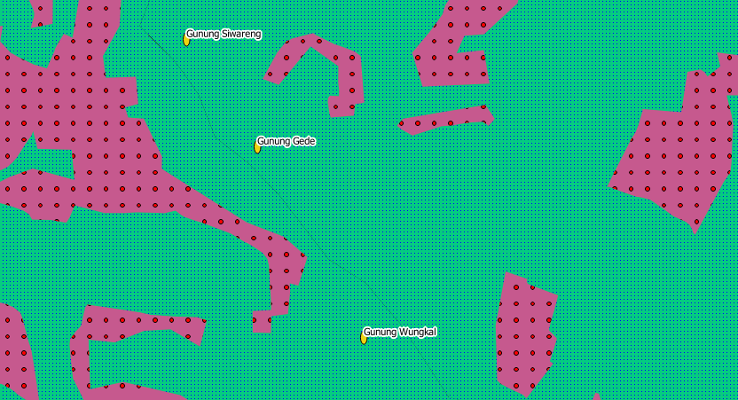
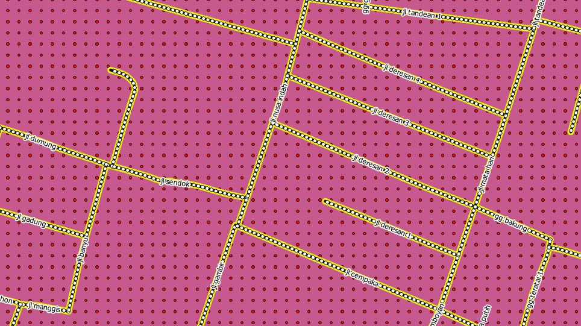
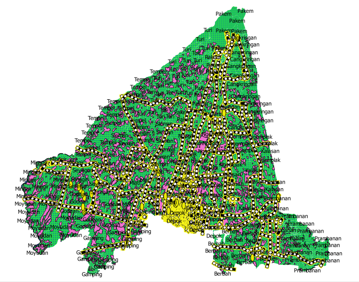
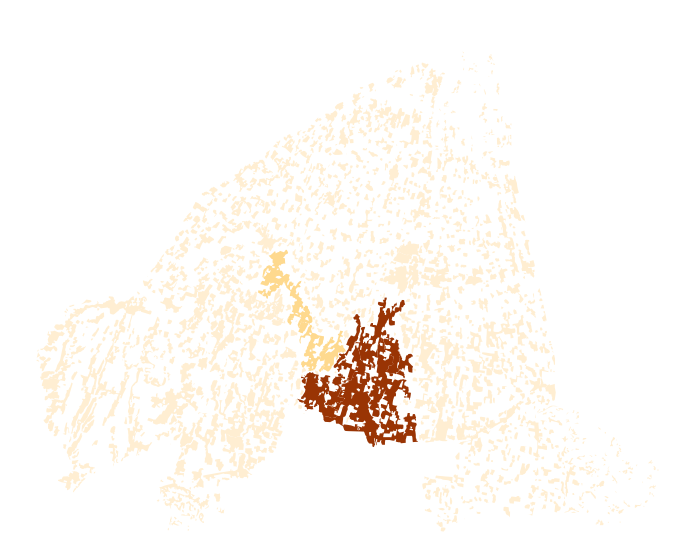

Module 7: Labels and Classification¶
Learning Objectives
Explore attribute data of an object and understand the uses of different types of data
Add labels to vector layers
Symbolise vector data using categories
Up to now, none of the changes we have made to the map have been influenced by the objects that are being shown. In other words, every type of vegetation looks alike, and all the roads look alike. When looking at the map, the viewers don’t know anything about the roads they are seeing; only that there is a road of a certain shape in a certain area.
But the whole strength of GIS is that all the objects that are visible on the map also have attributes. Maps in a GIS aren’t just pictures. They represent not only objects in locations, but also information about those objects. In this lesson we will explore the attribute data of an object and understand what the various data can be useful for.
If you would like to start with the examples used in this module, begin by
opening the QGIS project sleman_2_6.qgs.
1. Attribute data¶
Open the attribute table for the POI_Sleman_OSM layer by selecting it in the Layers panel and clicking the Open Attribute Table button (or right-click on the layer and select ).

Which field would be the most useful to use as a label?
You now know how to use the attribute table to see what is actually in the data you’re using. A dataset will only be useful to you if it has the attributes that you care about. If you know which attributes you need, you can quickly decide if you’re able to use a given dataset, or if you need to look for another one that has the required attribute data.
Different attributes are useful for different purposes. Some of them can be represented directly as text for the map user to see. Next we’ll see how to use attributes as labels, so that users can see the text on your map.
2. Label tool¶
Labels can be added to a map to show any information about an object. Any vector layer can have labels associated with it. Labels rely on the attribute data of a layer for their content.
There are several ways to add labels in QGIS, but some are better than others. You may notice that when you open the Layer Properties window for a layer, there is a tab called “Labels.” While this tab is designed to put labels on your map, it is not nearly as good as the so-called “Label Tool,” which we will learn in this section. Before being able to access the Label tool, you will need to ensure that it has been activated.
Go to the menu item .
Ensure that the Label item has a checkmark next to it. If it doesn’t, click on the Label item, and it will be activated. The Label toolbar looks like this:
Click on the POI_Sleman_OSM layer in the Layers panel, so that it is highlighted.
Click on the Layer Labeling Options button:
This gives you the Layer labeling settings dialog.
Check the box next to Label this layer with…
We must indicate which of the attribute fields we want to use for the labels. The NAME field is the mostly likely candidate for a label, so select NAME from the drop-down box:
Click OK. The map should now have labels like this:
This is good, but as you can see, the labels are overlapping the points that they are associated with. That doesn’t look very nice. The text is also a bit larger than it needs to be. Let’s fix these problems!
Open the Layer Labeling Options again by clicking on its button.
Click on the Text tab to change the text properties:
A standard text change dialog appears, similar to those in many other programs. Change the font to Arial and size to 9.
Now click on the Buffer tab to add a buffer space around the text. Check the box labelled Draw text buffer.
Your labels will look like this:
That’s the font problem solved! Now let’s look at the problem of the labels overlapping the points.
In the Label window dialog, go to the Placement tab.
Change the value of Distance to 2.
Click OK. The labels no longer hover over the icons, but are “buffered” a short distance away:
Labelling lines¶
Now that you know how labelling works, there’s an additional problem. Points and polygons are easy to label, but what about lines? If you label them the same way as the points, they will look funny. Street name labels, for example, should be parallel to the street lines, not hovering horizontally above them. To make lines behave, we’ll need to edit some options.
Hide the POI_Sleman_OSM layer so that it doesn’t distract you.
Activate labels for the Jalan_Sleman_OSM layer as before. (Remember to use the Label tool on the toolbar, not the one in Label Properties!)
Set the font size to 9 so that you can see more labels.
Zoom in so that the scale is near 1:10000.
On the Label window’s Placement tab, choose the following settings:
The map will look somewhat like this, depending on scale:
It’s good but still not ideal. For starters, some of the names appear more than once, and that’s not always necessary. To prevent that from happening:
Enable the option Merge connected lines to avoid duplicate labels which is located on the Rendering tab.
Another useful function is to prevent labels being drawn for features too short to be of notice.
Also on the Rendering tab, set the value of Suppress labeling of features smaller than … to 5.0 mm. Observe the results after you click Apply.
Try out different settings on the Placement tab as well. As we mentioned before, the horizontal option is not a good idea for roads in this case, so let’s try the curved option instead!
Select Curved under Placement. Here’s the result:
As you can see, this hides a lot of the labels that were previously visible, because of the difficulty of making some of them follow twisting street lines and still be legible. You can decide which of these options to use, depending on what you think seems more useful or what looks better.
Now that you know how attributes can make a visual difference for your map, how about using them to change the symbology of objects themselves? That’s the topic for the next section!
3. Classification¶
Labels are a good way to communicate information such as the names of individual places, but they can’t be used for everything. For example, let’s say that we want to show which district each feature in our vegetation layer is in. Using labels, it would look like this:
Obviously this is not ideal, so we need another solution. That’s what this lesson is about! In this section, we will learn how to classify vector data effectively.
3.1 Classifying nominal data¶
Open Layer Properties for the vegetasi layer.
Go to the Style tab.
Click on the drop-down box that says Single Symbol.
Change it to Categorized. The interface will change:
Change the Column field to guna_lahan and the Color ramp to Spectral:
Click the button labelled Classify:
Click OK. You’ll see something like this:
In the Layers panel, click the plus sign next to the vegetasi layer. This will show more information about the layer classification and styles.
So, this is useful! But it hurts your eyes to look at it, so let’s see what we can do about that.
Open Layer Properties and go to the Style tab again.
Click the Change button next to Symbol.
Remove the outline as you did in the previous module (change the border style to “No Pen”).
Click the Delete all button.
Now click Classify again, and new symbols will appear.
Change the colour for each type of vegetation by double-clicking on the coloured block next to its name. You can change the colour for each type of vegetation to something that you think is more applicable.
Notice that the category on the bottom is empty. Select it, and click the Delete button.
When we click OK our map looks like this:
If you feel confident in your new classification skills, try to classify the residential layer yourself. Use darker colours to distinguish it from vegetation.
3.2 Ratio classification¶
In the previous example, we classified the vegetasi layer by what is known as nominal classification. This type of classification is when categories are defined based on names. Next we will classify the pemukiman layer based on the size of each feature. Classifying with attributes that contain only positive numbers, such as land area, is known as ratio classification.
Open the Attribute Table for the pemukiman layer. Notice the final column, luas_ha. This attribute contains the size of the land area contained within that feature polygon.
Open the Layer Properties for pemukiman.
Change the style type to Graduated and use luas_ha as the Column.
Because we are categorising with numbers this time, a colour gradient will be useful for representing our categories. Click on Oranges next to Color ramp and then click Classify.
Now you’ll have something like this:
